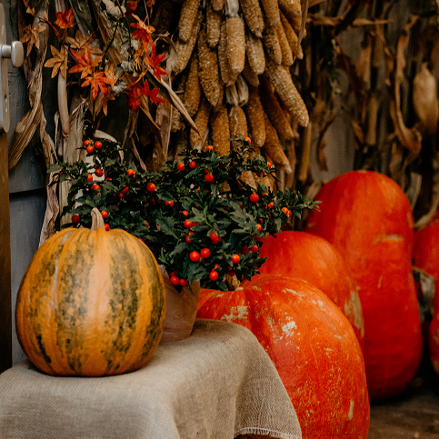

Grüne Events


Wachse über dich hinaus!
Hier findest du alle aktuellen Workshops, Events und Termine in unserem Gartencenter. Wir freuen uns auf dich!
Workshops in Paula’s Garden
Paulas Trockenblumenbouquet
Termine: vom 16. August bis 29. November 2025, samstags vierzehntägig.
Schon zu Paulas Zeiten war sie ein Hingucker, jetzt ist sie wieder hochmodern:
Die Trockenblume feiert ihr großes Comeback. Bei richtiger Pflege ist sie jahrelang haltbar – und tröstet mit ihren sanften Farben Blumenfans über die kalte Jahreszeit hinweg. In diesem Workshop suchen sich alle Teilnehmenden zunächst eine Vase aus, anschließend werden ganz individuelle Bouquets aus Trockenblumen zusammengestellt.
Uhrzeit:
Dauer:
Kosten:
max. Teilnehmer:
15 Uhr
2 Stunden
50 Euro, inklusive Vase und Trockenblumen
10
 Anmelden
Anmelden

Herbstdeko aus deinem Garten
Termine: 20. September 2025, 4. Oktober 2025
Es muss nicht immer der Kürbis sein.
Auch Ähren oder Hagebutten-Zweige können eine wunderschöne Herbstdeko ergeben. In diesem Workshop lernen die Teilnehmenden verschiedene Deko-Ideen kennen, außerdem erfahren sie, wie sie aus den Pflanzen in ihrem eigenen Garten hübsche herbstliche Arrangements zaubern können.
Uhrzeit:
Dauer:
Kosten:
max. Teilnehmer:
15 Uhr
2 Stunden
30 Euro inklusive Materialien
15
 Anmelden
AnmeldenAdventskränze selber machen
Termine: 15. und 22. November 2025
So individuell wie die Teilnehmenden dieses Workshops fallen auch ihre Adventskränze aus.
Sie können in alten Kuchenformen, filigranen Birkenästen oder Kaffeetassen entstehen, mit Fichten- oder Kiefernzweigen, Zapfen oder Nüssen, Zimtstangen oder Sternanis dekoriert sein. Paula’s Garden stellt die Materialien, aus denen die Teilnehmenden sich frei bedienen können. Anschließend werden Schritt für Schritt ganz individuelle Adventskränze gefertigt.
Uhrzeit:
Dauer:
Kosten:
max. Teilnehmer:
15 Uhr
2 Stunden
50 Euro inklusive Materialien
12
 Anmelden
Anmelden